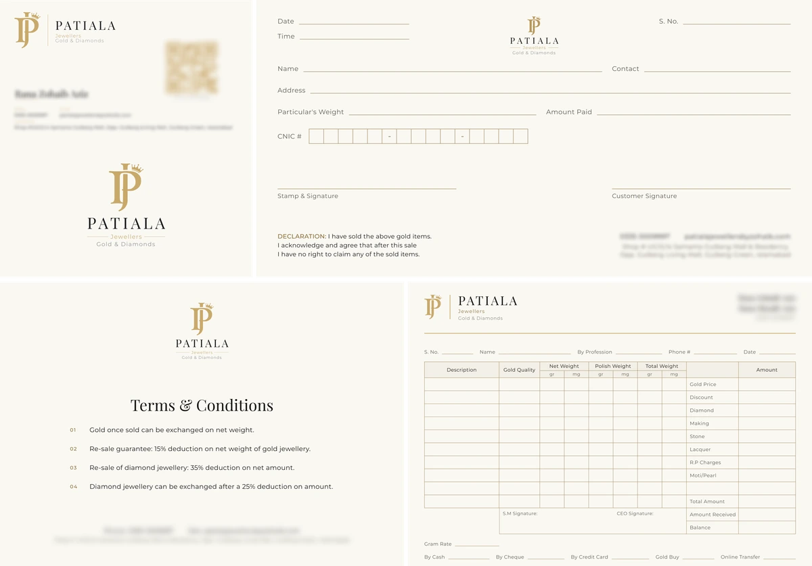
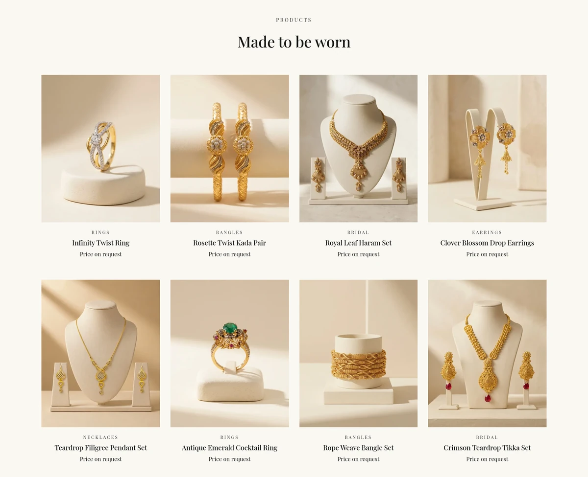
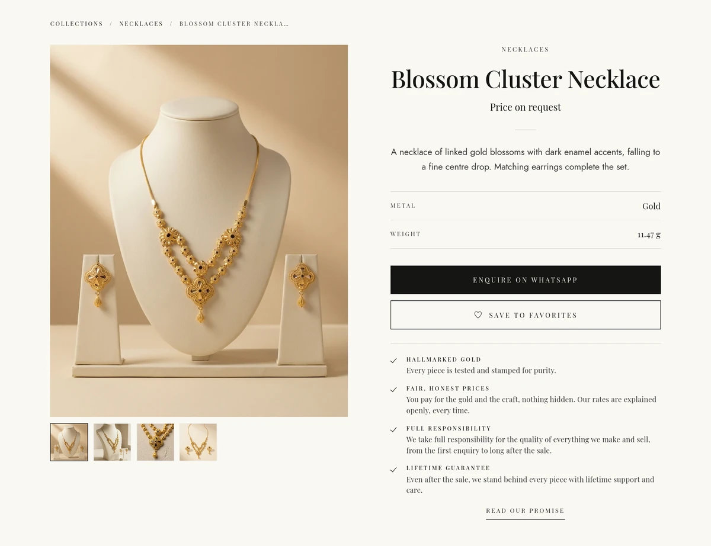

Patiala Jewellers
The website, identity, print and products for a jewellery brand, built around the logo their customers already know.
Keeping the logo their customers know
We offered the client a more modern logo. They preferred the mark their local customers already know and trust, which was the right call for this audience, so we kept it and built the whole identity around it.
A website that matches the brand
We designed and built their website from scratch and listed their full range of products, each with clean, consistent product images made for the listing.
The same look in print
Visiting cards, ledger books and other printed pieces carry the same look, so the brand looks the same wherever it appears.

Product images
Every product on the site has a clean, consistent image, so the range is easy to browse and compare.

